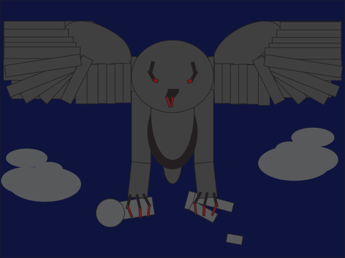

Anthony Clausen
Hi, I am a senior currently attending the College of Staten Island, and am set to graduate in the Spring of 2027. I've recently taken an interest into photography & videography, and since then have been improving on my editing skills via class interest. Feel free to scroll through my work.
Featured works
My biggest and self deemed best work I've created that
involves more than just one aspect (work that involves
advanced photography, photoshop & illustrator)
Camp Slaughter II (Intern)
base photos
base photos
Camp Slaughter (Intern)
Edited photos
Edited photos

Work I've created that stems from Adobe Illustrator
and/or other editing apps alike.